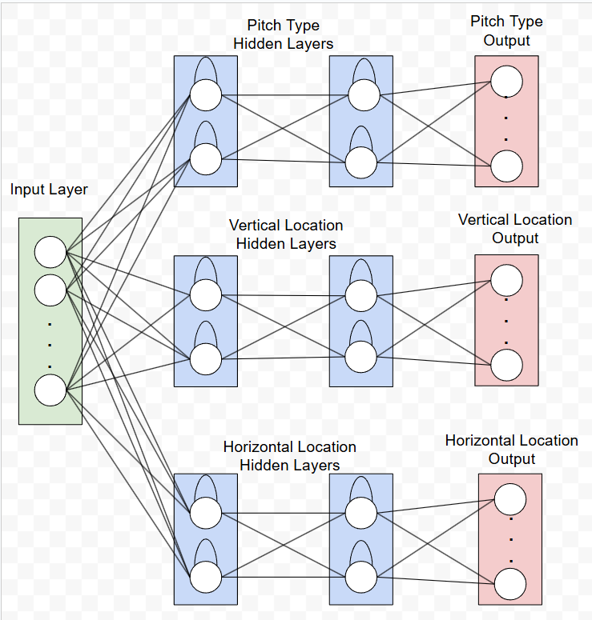
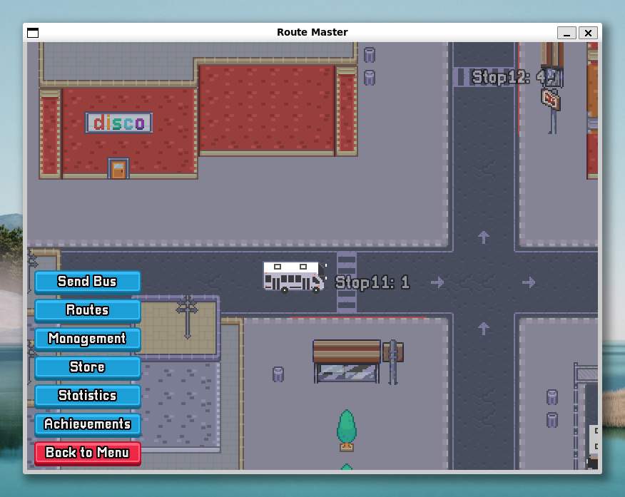

My Projects

Pitch Prediction using Deep Learning
Applying AI to the sport of baseball. This project implements an ensemble of neural networks (LSTMs, GRUs, Attention-based LSTMs) to predict pitch type and location.
Leveraging the Statcast dataset, the system processes sequential pitch data to forecast key characteristics of the next pitch, including its type (e.g., fastball, curveball) and location within the strike zone.
The core innovation lies in its comprehensive approach to pitch prediction. By employing a multi-task learning framework, the model is trained to optimize for both pitch type and location, enhancing its predictive accuracy and utility for coaches, players, and analysts.

Route Master Simulation Game
Route Master is a simulation game where you manage a bus company. Players aim to grow their earnings by testing different routes, upgrading their fleet, or taking risks by signing contracts.
The goal is to become a tycoon in the urban transport sector!
In this project, our team focused on creating an engaging experience. I contributed to developing the core simulation engine, building a realistic game world using probabilities, and worked on the UI and Achievements page. This collaborative effort resulted in a strategic and immersive simulation.